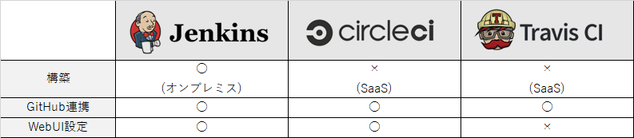
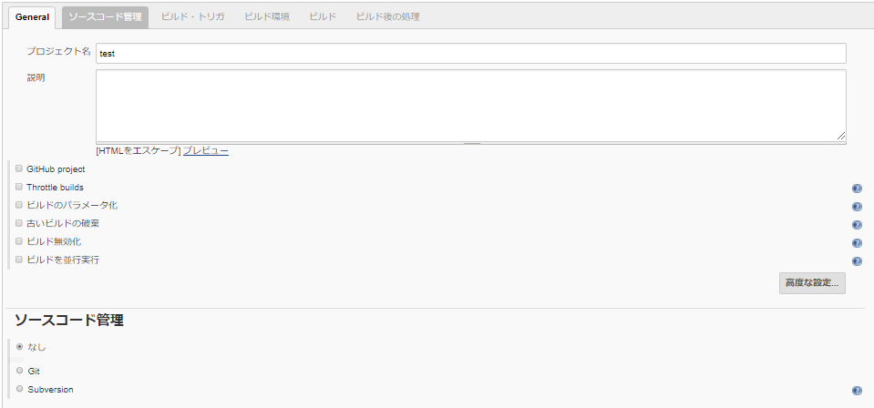
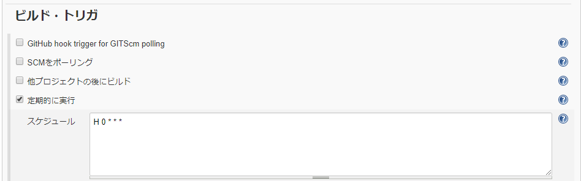
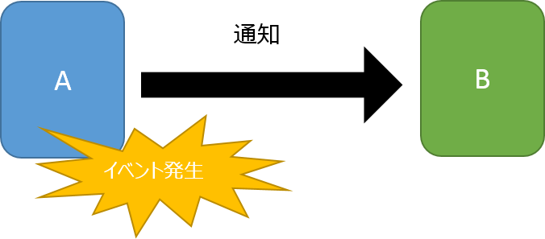
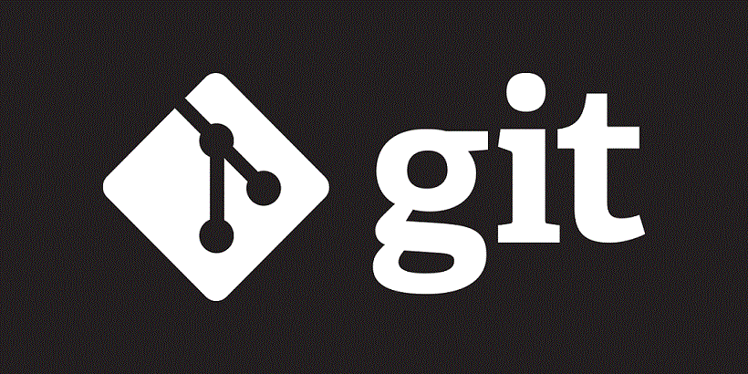
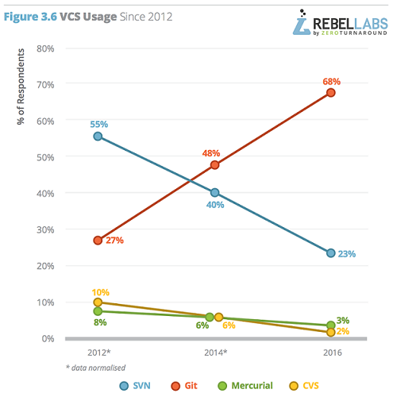

Jenkinsの紹介
Java開発
CIって何?
CIとは
・Continuous Integrationの略
・継続的インテグレーションと呼ばれている

CIのメリット
・開発者がローカル環境で見逃したコーディング規約違反やテストケース漏れを防ぐことができる
・稼働時間の短縮につながる
・手戻りの削減につながる
・品質の維持につながる
利用できるツールは？
利用できるツール

ビルドを自動で行うためのツール
集合知がある
・プラグインが豊富
・参考書
・ネットの情報が豊富
GUIで設定可能

定期実行可能

WebHook

Git使ってますか？

バージョン管理システムの利用率

参考「https://zeroturnaround.com/rebellabs/java-tools-and-technologies-landscape-2016-trends/」
なぜGitなの？
SVNの悪い点
・バグの有無に関わらず、変更内容をコミットした時点で変更内容が取り込まれてしまう
・レビューをするのに管理簿が必要
Git Flow

参考「https://hackmd.io/p/BkSkUizJZ#/」
GitHub Flow

参考「http://mateuszmistecki.pl/2017/03/27/github-flow/」
Jenkinsfileとは
・Groovyで書くことができるDSLのことである
ビルド結果を通知する
・MattermostやSlackなどのチャットツール
・メール
・Jenkinsのアプリ
Jenkinsfileにビルドスクリプトを記述する
・GUIでの操作が減る
・設定をファイルで管理可能
・設定をファイルで管理可能
・コミュニケーションツール(mattermost,slack)
・バージョン管理ツール(GitLabやGitHub,SVN）
・ビルドツール(Gradle、Maven)
・テストツール(Junit、Spock)
・カバレッジツール(jacoco)
・静的解析ツール(CheckStyle、FindBugs、PMD)
・メトリクスツール(SonarQube)
・ライブラリ管理ツール（Nexus、Artifacroty）